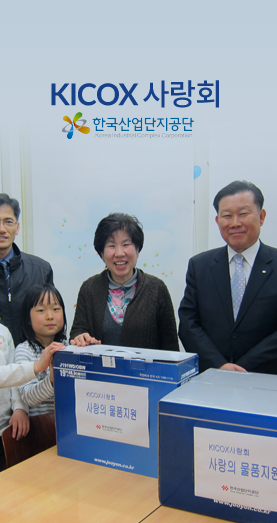

봉사단 소개

- 기업의 사회적 책임이라는 사회적 요구에 부응하고 고객, 지역, 사회와 나눔의 사회공헌활동을 전사적으로 전개하기 위하여 2006년 6월 한국산업단지공단 사회봉사단을 창단하였습니다.
- 그 동안 미래를 위한 성공 프로젝트 일환으로 일상생활 속 기부문화를 통해 나눔 문화를 확산하여 사회적 기업으로서 역할을 성실히 수행하기 위해 임직원을 대상으로 사랑의 성금을 모금하고 회사지원금(매칭그랜드 제도) 제도를 도입하여 이를 재원으로 다양한 사회공헌활동을 추진 중에 있습니다.
-
또한, 2011년 4월 지역본부 별로 운영되던 봉사단을 체계적인 사회공헌 활동을 위하여 KICOX
사랑회로 통합하였습니다.
앞으로도 지역사회 소외계층에 꿈과 희망을 전파하여 이들로 하여금 용기와 자부심을 갖게 하고 사회일원으로서 더불어 살아갈 수 있도록 적극 후원하도록 노력하겠습니다.
한국산업단지공단 : KICOX 사랑회

-
사랑의 울타리 활동 전개도시지역 한부모가정, 조손가정, 다문화가정 등 취약계층 아동에 대하여 빈곤의 대물림 사슬을 끊고 발전 기회를 지속 ∙ 안정적으로 제공
-
취약계층 소년소녀가장 후원금 지원지역별 사회복지법인과 연계, 취약계층 소년소녀가장을 선발하여 직접 지원
-
사회복지시설 지원취약계층 아동 지원 중심인 사랑의 울타리 활동을 통해 지원이 곤란한 노인 등 소외계층의 지원을 위한 지역별 사회복지법안을 지원
-
국군장병 등 취약지 근무자 위문품 지원국토방위에 노력하고 있는 국군장병, 전투 ∙ 의무경찰 및 취약지 근무자 등 위로 ∙ 격려
-
산업단지 입주기업 및 근로자 지원산업단지 내 구인구직활동, 문화행사 및 환경정비 등 입주기업 및 근로자의 경제활동 및 근무여건 지원
-
사랑의 헌혈 봉사활동 실시지역별 사랑의 헌혈 봉사를 통한 생명 나눔 가치를 실천